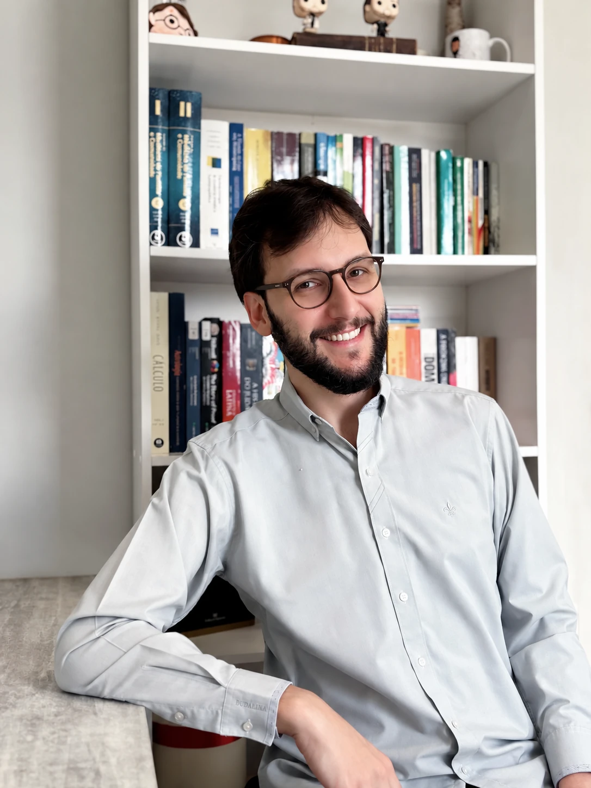

Iago Caires · Médico Homeopata
Uma medicina que começa pela pessoa.
Um olhar individualizado para compreender não apenas a queixa, mas também as particularidades de cada paciente.
Agendar consultaOn-line e presencial em Londrina
 Primeira consulta: 1h a 1h30
Primeira consulta: 1h a 1h30

Sempre quis ser
um médico de gente,e não de doenças.
Minha formação em Medicina de Família e Comunidade e em Homeopatia orienta um cuidado que considera a história e as particularidades de cada pessoa.
Conheça minha trajetóriaCRM-PR 52.594RQE-PR Homeopatia 32.472RQE-PR Medicina de Família e Comunidade 32.178
Como funciona a consulta?
Agendar consulta-
Agendamento
Entre em contato para escolher um horário disponível para a consulta.
-
Primeira consulta
On-line, por videochamada, ou presencial na Casa Gliare, em Londrina. Duração aproximada de 1h a 1h30.
-
Avaliação
Um espaço para compreender suas queixas, histórico e particularidades.
-
Acompanhamento
Pelo WhatsApp, conforme orientação médica.
Medicina e individualidade
O diagnóstico pode ser o mesmo.
O paciente nunca é.
O que é Homeopatia?
A Homeopatia é uma especialidade médica reconhecida no Brasil e possui uma forma própria de compreender e conduzir o tratamento. Um de seus fundamentos é a individualização.
O diagnóstico é importante, mas a consulta também considera a forma como cada pessoa percebe e vive suas queixas.
Os detalhes também
fazem parte da consulta.
Sono, apetite, sensações, emoções e a forma como os sintomas aparecem ajudam a compor a história de cada pessoa.
- Sintoma
- Não apenas qual é, mas como aparece e é percebido por você.
- Individualização
- O conjunto dessas informações ajuda a orientar uma avaliação individualizada.
- Medicamento
- Na prática homeopática, a escolha do medicamento considera as particularidades identificadas na avaliação.
Entenda o cuidado
O que é um medicamento homeopático?
Os medicamentos homeopáticos são preparados segundo métodos específicos descritos na Farmacopeia Homeopática Brasileira e podem ter origem em diferentes substâncias.
Podem ser apresentados em gotas, glóbulos, comprimidos e outras preparações. Na prática homeopática, a escolha considera as informações reunidas durante a consulta.
Veja as dúvidas frequentesSobre mim
Quem é
Iago Caires?
Sou Iago da Silva Caires, médico especialista em Homeopatia e Medicina de Família e Comunidade.
Desde a graduação, buscava uma forma de exercer a Medicina que me permitisse olhar para a pessoa de maneira mais ampla. Essa vontade me levou à residência em Medicina de Família e Comunidade e, depois, à minha segunda residência, em Homeopatia.
Além dos atendimentos, minha trajetória profissional também inclui atuação médica e docência.
-
Medicina
Faculdade de Medicina de Ribeirão Preto — USP
-
Medicina de Família e Comunidade
Residência no Hospital das Clínicas da FMRP-USP
-
Homeopatia
Residência na Universidade Federal de Mato Grosso do Sul — UFMS
Dúvidas frequentes
Talvez você também tenha alguma dessas dúvidas.
Informação e diálogo também fazem parte do cuidado.
A Homeopatia é somente placebo?
Não.
Numerosos estudos mostram o efeito de medicamentos
homeopáticos em animais, plantas e até células
in vitro –
organismos irracionais que não estão sujeitos ao efeito
placebo.
Em 2017, o Conselho Regional de Medicina de São Paulo
(Cremesp) publicou um dossiê reunindo estudos sobre a
Homeopatia e sua eficácia:
A Homeopatia demora para fazer efeito?
Depende. Sintomas agudos, como crise de asma ou crise de enxaqueca, podem responder tão ou mais rápido a um medicamento homeopático bem indicado do que a um medicamento convencional. Já quadros crônicos podem exigir mais tempo para que a cura se complete, porém esta ocorrerá de forma duradoura e consistente.
A Homeopatia é incompatível com tratamentos convencionais?
Näo. O medicamento homeopático bem indicado estimulará uma reação curativa independente de outros tratamentos em curso. Alguns medicamentos convencionais podem diminuir essa reação curativa, mas não é necessário interromper nenhum deles para tomar o medicamento homeopático.
O que pode ser tratado com a Homeopatia?
Qualquer doença ou condição de saúde que cause sofrimento. O tratamento homeopático baseia-se no conjunto de sintomas físicos, emocionais e mentais que a pessoa apresenta, independentemente dos diagnósticos associados a eles, como depressão, insônia, ansiedade, alergias de pele, rinite, asma, autismo, TDAH, úlceras que não cicatrizam, etc. A Homeopatia pode ser utilizada para tratar diversos tipos de problemas de saúde e em pessoas de todas as idades.
Agende sua consulta
O cuidado de verdade valoriza a sua história. Vamos conversar?
Para saber mais sobre o atendimento ou agendar uma consulta, entre em contato.
Presencial em Londrina
Casa Gliare
R. Alvarenga Peixoto, 247 — Jardim LagoLondrina — PR, 86015-340 Abrir rotas no Google Maps